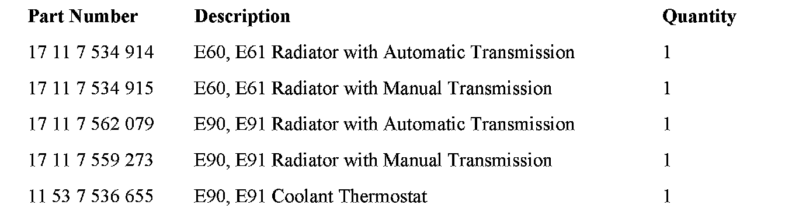
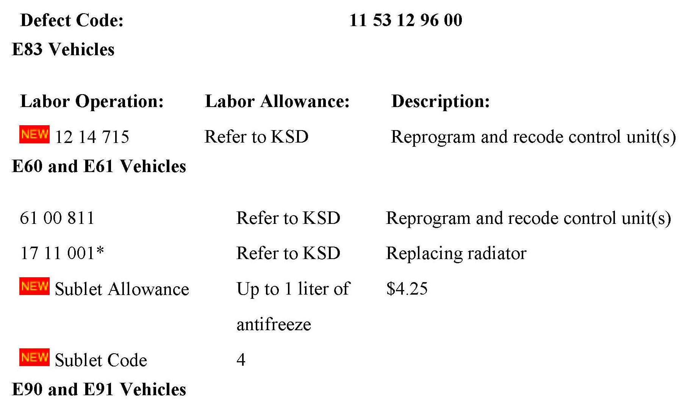
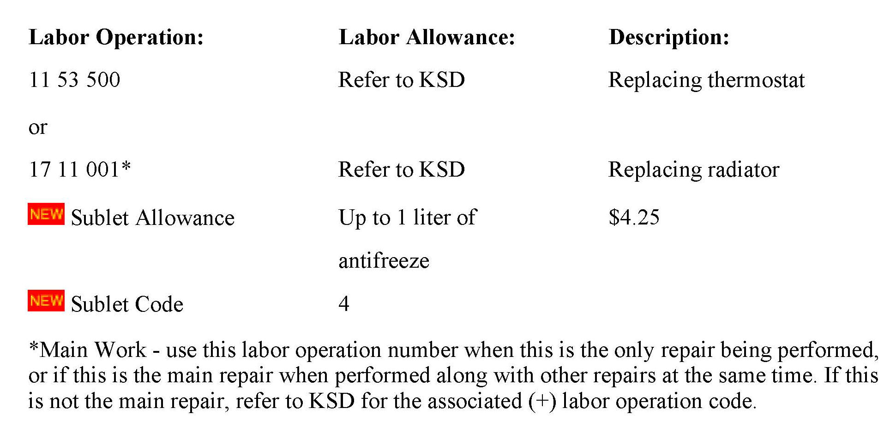

Engine Controls - MIL ON/Fault Code 2EF4 Set
SI B12 07 06Engine Electrical Systems
October 2009
Technical Service
This Service Information bulletin supersedes SI B12 07 06 dated June 2009.
[NEW] designates changes to this revision
SUBJECT
"Service Engine Soon" Lamp Illuminated: FC 2EF4 Map Thermostat
MODEL
E90, E91 (3 Series) all models equipped with N52 engine
E60, E61 (5 Series) all models equipped with N52 engine
Vehicles produced up to March 2006
E83 equipped with N52K produced up to September 2008
SITUATION
The customer complains that the "Service Engine Soon" lamp is illuminated while driving. DME fault code 2EF4 Thermostat Map Cooling is stored. In some instances, the customer also complains about insufficient vehicle heating.
CAUSE
E83 Vehicles
DME software calibration error
E60 Vehicles
1. DME software error
2. Internal leakage in the radiator causing an insufficient heating effect
E90 Vehicles
1. An unsatisfactory weld causes interference between the thermostat and the plastic housing. This condition applies only to BEHR Map Thermostats (black plastic housing). Thermostats manufactured by WAHLER (silver aluminum housing) are not affected.
2. Internal leakage in the radiator causing an insufficient heating effect
PROCEDURE
E83 Vehicles
1. Reprogram the DME with ISTA/P 2.31.1 or higher.
E60 Vehicles
1. Run the vehicle to operating temperature; a short ten-minute drive may be needed.
2. Connect the vehicle to DIS Plus or GT1 to monitor the Engine Coolant Temperature Sensor and Radiator Output Temperature Sensor.
3. Allow the vehicle to idle for approximately 5 minutes in the workshop; record the values of the two temperature sensors.
4. A difference of 20° Celsius should exist between the two temperatures. If the temperature difference is less than 20° Celsius, replace the radiator and reprogram the vehicle with Progman 23.0 or higher. If the temperature difference is greater than 20° Celsius, only reprogram the vehicle with Progman V23.0 or higher.
Example: The engine temperature = 95° Celsius and the radiator outlet temperature = 67° Celsius.
E90 Vehicles
1. Run the vehicle to operating temperature; a short ten-minute drive may be needed.
2. Connect the vehicle to DIS Plus or GT1 to monitor the Engine Coolant Temperature Sensor and Radiator Output Temperature Sensor.
3. Allow the vehicle to idle for approximately 5 minutes in the workshop; record the values of the two temperature sensors.
4. A difference of 20� Celsius should exist between the two temperatures. If the temperature difference is less than 20° Celsius, replace the radiator. If the temperature difference is greater than 20° Celsius, proceed to step 5.
Example: The engine temperature = 95° Celsius and the radiator outlet temperature = 67° Celsius.
5. Verify the production date of the thermostat. Thermostats produced prior to November 25th, 2005, are affected. The production date of the part can be found above the BMW Roundel on the plastic housing.
Example: 25-11-2005 = 25th day of November 2005
NOTE:
Removing the thermostat from the vehicle is not necessary to view the production date. The production date can be seen from the top of the engine bay, looking downward, using a droplight or flashlight.
6. If affected, replace the thermostat in accordance with Repair Instruction RA 11 53 000, Removing and installing/replacing coolant thermostat (N52).
Note:
BMW recommends filling the cooling system for protection against freezing down to -4°F (- 37°C). This means an antifreeze ratio of 50% antifreeze and 50% water. In severely cold areas, the antifreeze can be increased to 60%, which provides freezing protection down to -62°F
(-52°C). Do not exceed a 60% ratio of antifreeze.
The specified antifreeze ratio is important, since an insufficient amount would impair antifreezing and corrosion-inhibiting protection. An excessive amount would not improve freezing protection, but would instead reduce freezing protection. At all times, the antifreeze and water should be premixed before pouring into the engine. If premixing is not performed, damage will occur to the water pump assembly.

PARTS INFORMATION


WARRANTY INFORMATION
Covered under the terms of the BMW New Vehicle Limited Warranty, or the Certified Pre-Owned program.

Disclaimer